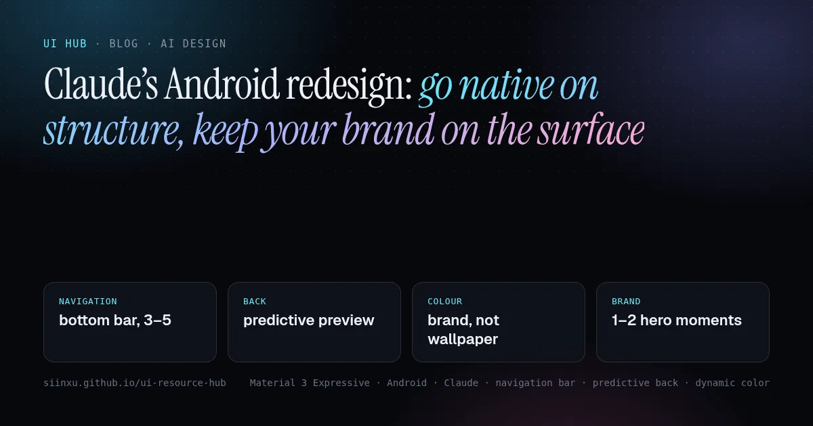
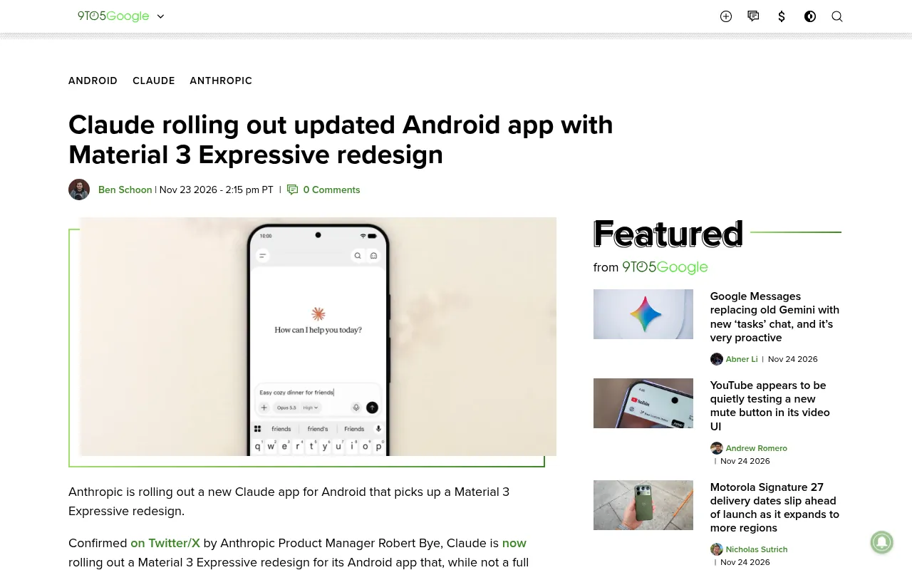
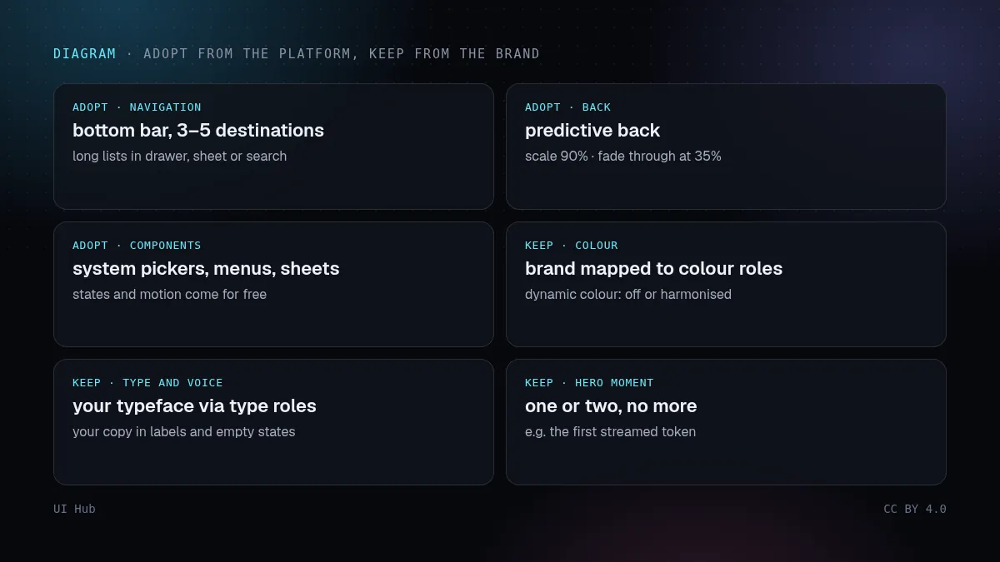
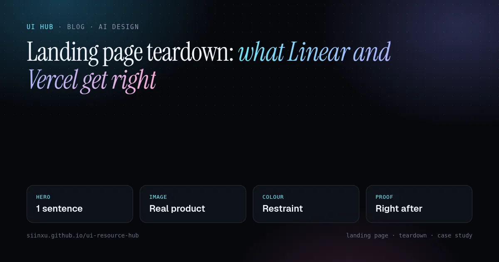
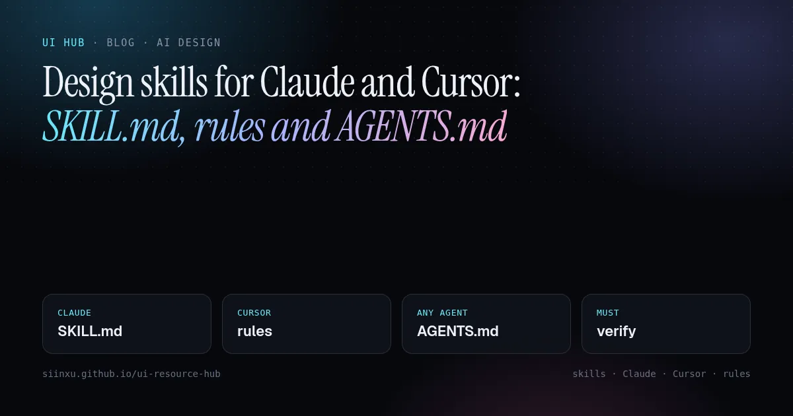
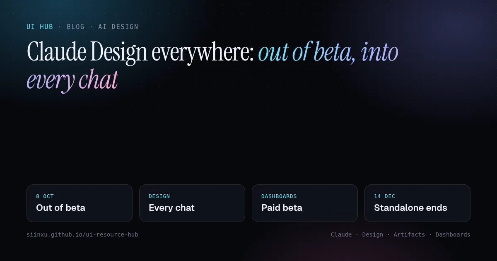

Claude’s Android redesign: go native on structure, keep your brand on the surfaceClaudeのAndroid版リデザイン：構造はネイティブに、ブランドは表層にClaude 안드로이드 리디자인: 구조는 네이티브로, 브랜드는 표면에Reka bentuk semula Claude untuk Android: struktur ikut platform, jenama kekal di permukaanClaude làm mới app Android: cấu trúc theo nền tảng, thương hiệu ở bề mặtLa refonte Android de Claude : la structure native, la marque en surfaceEl rediseño de Claude para Android: estructura nativa, marca en la superficieClaudes Android-Redesign: Struktur nativ, Marke an der Oberfläche
Anthropic rolled out a Material 3 Expressive redesign of the Claude Android app this week: a bottom navigation bar instead of a hamburger-first layout, Material components in the model switcher, and Anthropic’s own colours instead of wallpaper-based dynamic colour. We read it as a pattern for every AI product shipping a mobile app: borrow the platform’s navigation, back gesture and motion, keep your palette, type and one or two hero moments. What to adopt, what to keep, a checklist and a prompt for coding agents.AnthropicはClaudeのAndroidアプリにMaterial 3 Expressiveのリデザインを今週配信した。ハンバーガーメニュー中心の構成をやめて下部ナビゲーションバーを採用し、モデル切り替えにはMaterialコンポーネントを使い、配色は壁紙由来のダイナミックカラーではなくAnthropic独自の色を維持した。モバイルアプリを出すすべてのAI製品に通じる型として読み解く：ナビゲーション、戻るジェスチャー、モーションはプラットフォームに従い、配色、書体、1〜2個のヒーローモーメントはブランドに残す。採用すべきもの、残すもの、チェックリストとコーディングエージェント向けプロンプト付き。Anthropic이 이번 주 Claude 안드로이드 앱에 Material 3 Expressive 리디자인을 배포했다. 햄버거 메뉴 중심 구성 대신 하단 내비게이션 바를 쓰고, 모델 전환기에는 Material 컴포넌트를 적용했으며, 배경화면 기반 다이내믹 컬러 대신 Anthropic 고유 색을 유지했다. 모바일 앱을 내는 모든 AI 제품에 통하는 패턴으로 읽는다: 내비게이션, 뒤로 가기 제스처, 모션은 플랫폼을 따르고 색, 서체, 한두 개의 히어로 모먼트는 브랜드에 남긴다. 무엇을 채택하고 무엇을 지킬지, 체크리스트와 코딩 에이전트용 프롬프트 포함.Minggu ini Anthropic melancarkan reka bentuk semula Material 3 Expressive untuk aplikasi Claude di Android: bar navigasi bawah menggantikan susun atur yang bergantung pada menu hamburger, komponen Material dalam pemilih model, dan warna Anthropic sendiri, bukan warna dinamik daripada kertas dinding. Kami melihatnya sebagai corak untuk setiap produk AI yang membina aplikasi mudah alih: pinjam navigasi, gerak isyarat kembali dan gerakan platform; kekalkan palet, fon dan satu atau dua detik utama jenama. Apa yang patut diambil, apa yang patut dikekalkan, senarai semak dan prompt untuk ejen pengekodan.Tuần này Anthropic tung bản thiết kế lại theo Material 3 Expressive cho app Claude trên Android: thanh điều hướng dưới cùng thay cho bố cục dựa vào menu hamburger, component Material trong bộ chọn model, và vẫn giữ màu riêng của Anthropic thay vì màu động lấy từ hình nền. Chúng tôi xem đây là khuôn mẫu cho mọi sản phẩm AI làm app di động: mượn điều hướng, cử chỉ quay lại và chuyển động của nền tảng; giữ bảng màu, kiểu chữ và một hai khoảnh khắc nổi bật cho thương hiệu. Nên áp dụng gì, nên giữ gì, kèm checklist và prompt cho agent lập trình.Anthropic a déployé cette semaine une refonte Material 3 Expressive de l’app Android de Claude : une barre de navigation en bas au lieu d’une mise en page centrée sur le menu hamburger, des composants Material dans le sélecteur de modèle, et les couleurs d’Anthropic plutôt que la couleur dynamique tirée du fond d’écran. Nous y voyons un modèle pour tout produit d’IA qui sort une app mobile : empruntez la navigation, le geste retour et le mouvement de la plateforme, gardez votre palette, votre typographie et un ou deux moments forts. Quoi adopter, quoi garder, une checklist et un prompt pour agents de code.Anthropic lanzó esta semana un rediseño Material 3 Expressive de la app de Claude para Android: una barra de navegación inferior en lugar de un diseño centrado en el menú hamburguesa, componentes Material en el selector de modelo y los colores propios de Anthropic en vez del color dinámico del fondo de pantalla. Lo leemos como un patrón para cualquier producto de IA con app móvil: toma de la plataforma la navegación, el gesto atrás y el movimiento; conserva tu paleta, tu tipografía y uno o dos momentos estrella. Qué adoptar, qué conservar, una checklist y un prompt para agentes de código.Anthropic hat diese Woche ein Material-3-Expressive-Redesign der Claude-App für Android ausgerollt: eine untere Navigationsleiste statt eines Layouts rund um das Hamburger-Menü, Material-Komponenten im Modellwechsler und Anthropics eigene Farben statt dynamischer Farben aus dem Hintergrundbild. Wir lesen das als Muster für jedes KI-Produkt mit einer Mobile-App: Navigation, Zurück-Geste und Bewegung von der Plattform übernehmen, Palette, Schrift und ein bis zwei Hero-Momente der Marke behalten. Was übernehmen, was behalten, eine Checkliste und ein Prompt für Coding-Agents.

本文は英語で表示しています。
본문은 영어로 표시됩니다.
Kandungan dipaparkan dalam bahasa Inggeris.
Nội dung hiển thị bằng tiếng Anh.
Le corps de l’article est en anglais.
El cuerpo del artículo está en inglés.
Der Beitragstext ist auf Englisch.
Anthropic is rolling out a redesigned Claude app for Android. Product manager Robert Bye announced it on X on 23 November: “we went full Material 3 Expressive to make everything feel as native as possible.” 9to5Google’s Ben Schoon, who looked at the build the same day, describes a bottom bar that replaces the old reliance on the hamburger menu (the menu stays, but now mostly holds chat history), Material 3 elements in the model switcher and the chat background, and colours that stay Anthropic’s own rather than following the phone’s wallpaper. Three days earlier Bye had introduced a new mobile app with a tab bar on both iOS and Android, so this is the Android-specific layer on top of a shared structure.

The reaction is what makes it worth a post. Matthew McCullough, thanking Anthropic on behalf of Android’s developer team, summed it up as “native navigation… and Material 3 Expressive motion, and it still feels like Claude.” That last clause is the design problem every AI product team has right now. Chat apps all share the same shell: a composer, a history list, a model picker, settings. The difference between them is the conversation, not the chrome. So the chrome can afford to behave like the platform, and the brand can live somewhere more useful.
What actually changed
- Navigation became visible. Core destinations moved to a bottom navigation bar within thumb reach. Material 3 recommends a navigation bar for 3–5 destinations of equal importance on windows narrower than 840dp, and the Expressive update replaced the baseline bar with a shorter “flexible” one. Chat history, which is a long list rather than a destination, stays behind the menu.
- Components came from the system. The model switcher and chat surfaces use Material 3 components, so they inherit the platform’s states, shapes and spring-based motion instead of a custom imitation.
- Colour stayed on brand. 9to5Google saw no obvious use of Material You dynamic colour. Android supports this choice: its docs show how to keep brand colours fixed, and how to harmonise custom colours so they sit well next to user-generated palettes.
- One rough edge. The back gesture animates the search bar, but does not preview the previous screen the way Android’s predictive back guidance expects. 9to5Google called it nit-picking. We think it is the most useful detail in the story, because it is the part users feel without being able to name it.

Our take: borrow the skeleton, keep the skin
For years many AI apps shipped one cross-platform design with a hamburger menu and a custom palette everywhere. It was cheap, and it hid the product’s structure. Nielsen Norman Group’s quantitative study of hidden navigation found that hiding the main navigation cut discoverability almost in half, and recommended showing up to four top-level links on phones. A bottom bar is the mobile answer to that, and Material 3 Expressive gives it to you with motion and states already tuned.
The split we would copy is simple. Anything the user’s hands and habits already know belongs to the platform: where navigation lives, how back works, how sheets open, how fast things spring. Anything that makes the product recognisable belongs to the brand: palette, typeface, illustration, the tone of the copy, and one or two hero moments. Google’s own Expressive guidance says the same about the last point: stick to one or two hero moments, because more becomes distracting. For an AI app the obvious candidate is the moment a response starts to stream.
Two cautions. First, “native” is a contract, not a style. If you adopt the platform’s look, people expect its behaviour, and a back gesture that does not preview, or a sheet that ignores gesture insets, feels more broken in a native-looking app than in an obviously custom one. Second, native per platform means iOS gets its own answer. Bye’s first announcement covered a tab bar on both systems; on iOS the reference is Apple’s tab bar guidance, not the Android bar ported across.
Adopt or keep: a working split
- Adopt the navigation model. Count your top-level destinations. Three to five equal ones go in the bottom bar; long lists such as history go in a drawer, sheet or search.
- Adopt back behaviour. Opt in to predictive back. Since Android 15, the system back-to-home, cross-activity and cross-task animations appear for apps that opt in. For your own full-screen surfaces, Android’s spec scales the outgoing screen to 90% and fades through at 35% of the gesture.
- Adopt motion tokens. Use the Expressive spring tokens for components instead of hand-picked durations.
- Keep your palette, deliberately. Map brand colours to Material colour roles (primary, secondary, tertiary, surface containers) so components theme correctly, then decide on dynamic colour: off, or harmonised custom colours. Write the decision down.
- Keep type and voice. Use your typeface through the type scale roles, and keep your copy style in labels and empty states.
- Keep one or two hero moments. Put the brand’s motion and colour where it matters most, and leave everything else calm.

Platform-fit checklist
- Do the 3–5 bottom-bar destinations stay the same on every screen, with long lists kept out of the bar?
- Does every back swipe preview where it goes, and does releasing early restore the screen exactly?
- Are no touch targets placed under the system gesture insets in edge-to-edge layouts?
- Are brand colours mapped to colour roles, checked for contrast in light and dark, with the dynamic-colour decision recorded?
- Do model pickers, menus and sheets use system components, so states and motion come for free?
- Is there at most one or two expressive hero moments, and is everything else quiet?
- Does the same check pass on iOS against its own conventions, rather than a port of the Android layout?
# Paste into a coding agent building an Android screen (Jetpack Compose)
Build <screen> with Material 3 Expressive components.
Navigation: bottom navigation bar with these 3–5 destinations: <list>.
Put long lists (history, files) in a drawer or search, not in the bar.
Back: enable predictive back; custom full-screen transitions scale to 90%
and fade through at 35% of gesture progress; releasing early restores state.
Colour: map our brand colours to colour roles (primary, secondary, tertiary,
surface containers). Dynamic colour: <off | harmonise custom colours>.
Type: our typeface via the Material type scale roles.
Motion: Expressive spring tokens only; one hero moment: <describe>.
Respect edge-to-edge gesture insets. Report light and dark screenshots
and a list of any component you had to build by hand.Related on UI Hub: handing off physics-based springs, gestures with fallbacks, and designing for the platform’s adaptive dark mode.
Anthropic is rolling out a redesigned Claude app for Android. Product manager Robert Bye announced it on X on 23 November: “we went full Material 3 Expressive to make everything feel as native as possible.” 9to5Google’s Ben Schoon, who looked at the build the same day, describes a bottom bar that replaces the old reliance on the hamburger menu (the menu stays, but now mostly holds chat history), Material 3 elements in the model switcher and the chat background, and colours that stay Anthropic’s own rather than following the phone’s wallpaper. Three days earlier Bye had introduced a new mobile app with a tab bar on both iOS and Android, so this is the Android-specific layer on top of a shared structure.
The reaction is what makes it worth a post. Matthew McCullough, thanking Anthropic on behalf of Android’s developer team, summed it up as “native navigation… and Material 3 Expressive motion, and it still feels like Claude.” That last clause is the design problem every AI product team has right now. Chat apps all share the same shell: a composer, a history list, a model picker, settings. The difference between them is the conversation, not the chrome. So the chrome can afford to behave like the platform, and the brand can live somewhere more useful.
What actually changed
- Navigation became visible. Core destinations moved to a bottom navigation bar within thumb reach. Material 3 recommends a navigation bar for 3–5 destinations of equal importance on windows narrower than 840dp, and the Expressive update replaced the baseline bar with a shorter “flexible” one. Chat history, which is a long list rather than a destination, stays behind the menu.
- Components came from the system. The model switcher and chat surfaces use Material 3 components, so they inherit the platform’s states, shapes and spring-based motion instead of a custom imitation.
- Colour stayed on brand. 9to5Google saw no obvious use of Material You dynamic colour. Android supports this choice: its docs show how to keep brand colours fixed, and how to harmonise custom colours so they sit well next to user-generated palettes.
- One rough edge. The back gesture animates the search bar, but does not preview the previous screen the way Android’s predictive back guidance expects. 9to5Google called it nit-picking. We think it is the most useful detail in the story, because it is the part users feel without being able to name it.
Our take: borrow the skeleton, keep the skin
For years many AI apps shipped one cross-platform design with a hamburger menu and a custom palette everywhere. It was cheap, and it hid the product’s structure. Nielsen Norman Group’s quantitative study of hidden navigation found that hiding the main navigation cut discoverability almost in half, and recommended showing up to four top-level links on phones. A bottom bar is the mobile answer to that, and Material 3 Expressive gives it to you with motion and states already tuned.
The split we would copy is simple. Anything the user’s hands and habits already know belongs to the platform: where navigation lives, how back works, how sheets open, how fast things spring. Anything that makes the product recognisable belongs to the brand: palette, typeface, illustration, the tone of the copy, and one or two hero moments. Google’s own Expressive guidance says the same about the last point: stick to one or two hero moments, because more becomes distracting. For an AI app the obvious candidate is the moment a response starts to stream.
Two cautions. First, “native” is a contract, not a style. If you adopt the platform’s look, people expect its behaviour, and a back gesture that does not preview, or a sheet that ignores gesture insets, feels more broken in a native-looking app than in an obviously custom one. Second, native per platform means iOS gets its own answer. Bye’s first announcement covered a tab bar on both systems; on iOS the reference is Apple’s tab bar guidance, not the Android bar ported across.
Adopt or keep: a working split
- Adopt the navigation model. Count your top-level destinations. Three to five equal ones go in the bottom bar; long lists such as history go in a drawer, sheet or search.
- Adopt back behaviour. Opt in to predictive back. Since Android 15, the system back-to-home, cross-activity and cross-task animations appear for apps that opt in. For your own full-screen surfaces, Android’s spec scales the outgoing screen to 90% and fades through at 35% of the gesture.
- Adopt motion tokens. Use the Expressive spring tokens for components instead of hand-picked durations.
- Keep your palette, deliberately. Map brand colours to Material colour roles (primary, secondary, tertiary, surface containers) so components theme correctly, then decide on dynamic colour: off, or harmonised custom colours. Write the decision down.
- Keep type and voice. Use your typeface through the type scale roles, and keep your copy style in labels and empty states.
- Keep one or two hero moments. Put the brand’s motion and colour where it matters most, and leave everything else calm.
Platform-fit checklist
- Do the 3–5 bottom-bar destinations stay the same on every screen, with long lists kept out of the bar?
- Does every back swipe preview where it goes, and does releasing early restore the screen exactly?
- Are no touch targets placed under the system gesture insets in edge-to-edge layouts?
- Are brand colours mapped to colour roles, checked for contrast in light and dark, with the dynamic-colour decision recorded?
- Do model pickers, menus and sheets use system components, so states and motion come for free?
- Is there at most one or two expressive hero moments, and is everything else quiet?
- Does the same check pass on iOS against its own conventions, rather than a port of the Android layout?
# Paste into a coding agent building an Android screen (Jetpack Compose)
Build <screen> with Material 3 Expressive components.
Navigation: bottom navigation bar with these 3–5 destinations: <list>.
Put long lists (history, files) in a drawer or search, not in the bar.
Back: enable predictive back; custom full-screen transitions scale to 90%
and fade through at 35% of gesture progress; releasing early restores state.
Colour: map our brand colours to colour roles (primary, secondary, tertiary,
surface containers). Dynamic colour: <off | harmonise custom colours>.
Type: our typeface via the Material type scale roles.
Motion: Expressive spring tokens only; one hero moment: <describe>.
Respect edge-to-edge gesture insets. Report light and dark screenshots
and a list of any component you had to build by hand.Related on UI Hub: handing off physics-based springs, gestures with fallbacks, and designing for the platform’s adaptive dark mode.
AI promptAIプロンプトAI 프롬프트Prompt AIPrompt cho AIPrompt IAPrompt de IAKI-Prompt
Paste this into Claude, Cursor, v0 or another assistant to apply this post to your own project. Replace the parts in angle brackets.Claude・Cursor・v0 などのAIアシスタントに貼り付けると、この記事の方法をあなたのプロジェクトに適用できます。山括弧の部分は自分の内容に置き換えてください。Claude, Cursor, v0 같은 AI 도우미에 붙여 넣으면 이 글의 방법을 내 프로젝트에 적용할 수 있습니다. 꺾쇠괄호 안은 내 내용으로 바꾸세요.Tampal ke Claude, Cursor, v0 atau pembantu lain untuk menggunakan kaedah artikel ini pada projek anda. Gantikan bahagian dalam kurungan sudut.Dán vào Claude, Cursor, v0 hoặc trợ lý khác để áp dụng bài này cho dự án của bạn. Thay phần trong dấu ngoặc nhọn bằng nội dung của bạn.Collez-le dans Claude, Cursor, v0 ou un autre assistant pour appliquer cet article à votre projet. Remplacez les parties entre chevrons.Pégalo en Claude, Cursor, v0 u otro asistente para aplicar este artículo a tu proyecto. Sustituye lo que está entre corchetes angulares.In Claude, Cursor, v0 oder einen anderen Assistenten einfügen, um diesen Beitrag auf dein Projekt anzuwenden. Teile in spitzen Klammern ersetzen.
You are a senior UI engineer. Apply the article “Claude’s Android redesign: go native on structure, keep your brand on the surface” (https://ui.incidental.site/blog/claude-android-native-shell-brand-surface/) to my project.
Key idea: Anthropic rolled out a Material 3 Expressive redesign of the Claude Android app this week: a bottom navigation bar instead of a hamburger-first layout, Material components in the model switcher, and Anthropic’s own colours instead of wallpaper-based dynamic colour. We read it as a pattern for every AI product shipping a mobile app: borrow the platform’s navigation, back gesture and motion, keep your palette, type and one or two hero moments. What to adopt, what to keep, a checklist and a prompt for coding agents.
Steps:
1. Read the article and turn its advice into a numbered checklist of concrete, checkable rules.
2. Audit <my page / component / repo> against that checklist; mark each rule PASS or FAIL with file and line.
3. Fix the FAIL items in small batches, using my existing tokens and components. Do not invent APIs; follow the official docs the article links to.
4. Finish with a short list of open questions and anything you could not verify.あなたはシニアUIエンジニアです。記事「ClaudeのAndroid版リデザイン：構造はネイティブに、ブランドは表層に」（https://ui.incidental.site/blog/claude-android-native-shell-brand-surface/）の方法を私のプロジェクトに適用してください。
要点：AnthropicはClaudeのAndroidアプリにMaterial 3 Expressiveのリデザインを今週配信した。ハンバーガーメニュー中心の構成をやめて下部ナビゲーションバーを採用し、モデル切り替えにはMaterialコンポーネントを使い、配色は壁紙由来のダイナミックカラーではなくAnthropic独自の色を維持した。モバイルアプリを出すすべてのAI製品に通じる型として読み解く：ナビゲーション、戻るジェスチャー、モーションはプラットフォームに従い、配色、書体、1〜2個のヒーローモーメントはブランドに残す。採用すべきもの、残すもの、チェックリストとコーディングエージェント向けプロンプト付き。
手順：
1. 記事を読み、助言を具体的で確認可能な番号付きチェックリストにする。
2. そのチェックリストで <私のページ / コンポーネント / リポジトリ> を監査し、各項目を合格／不合格で示し、ファイルと行番号を書く。
3. 不合格の項目を、既存のトークンとコンポーネントを使って少しずつ修正する。APIを捏造せず、記事がリンクする公式ドキュメントに従う。
4. 最後に未解決の質問と検証できなかった点を挙げる。당신은 시니어 UI 엔지니어입니다. 글 “Claude 안드로이드 리디자인: 구조는 네이티브로, 브랜드는 표면에”(https://ui.incidental.site/blog/claude-android-native-shell-brand-surface/)의 방법을 내 프로젝트에 적용해 주세요.
핵심: Anthropic이 이번 주 Claude 안드로이드 앱에 Material 3 Expressive 리디자인을 배포했다. 햄버거 메뉴 중심 구성 대신 하단 내비게이션 바를 쓰고, 모델 전환기에는 Material 컴포넌트를 적용했으며, 배경화면 기반 다이내믹 컬러 대신 Anthropic 고유 색을 유지했다. 모바일 앱을 내는 모든 AI 제품에 통하는 패턴으로 읽는다: 내비게이션, 뒤로 가기 제스처, 모션은 플랫폼을 따르고 색, 서체, 한두 개의 히어로 모먼트는 브랜드에 남긴다. 무엇을 채택하고 무엇을 지킬지, 체크리스트와 코딩 에이전트용 프롬프트 포함.
단계:
1. 글을 읽고 조언을 구체적이고 확인 가능한 번호 목록으로 정리한다.
2. 그 목록으로 <내 페이지 / 컴포넌트 / 저장소>를 점검하고, 항목마다 통과/실패와 파일·줄 번호를 적는다.
3. 실패 항목을 기존 토큰과 컴포넌트로 조금씩 고친다. API를 지어내지 말고 글에 링크된 공식 문서를 따른다.
4. 마지막으로 남은 질문과 확인하지 못한 내용을 정리한다.Anda jurutera UI kanan. Gunakan kaedah artikel “Reka bentuk semula Claude untuk Android: struktur ikut platform, jenama kekal di permukaan” (https://ui.incidental.site/blog/claude-android-native-shell-brand-surface/) pada projek saya.
Idea utama: Minggu ini Anthropic melancarkan reka bentuk semula Material 3 Expressive untuk aplikasi Claude di Android: bar navigasi bawah menggantikan susun atur yang bergantung pada menu hamburger, komponen Material dalam pemilih model, dan warna Anthropic sendiri, bukan warna dinamik daripada kertas dinding. Kami melihatnya sebagai corak untuk setiap produk AI yang membina aplikasi mudah alih: pinjam navigasi, gerak isyarat kembali dan gerakan platform; kekalkan palet, fon dan satu atau dua detik utama jenama. Apa yang patut diambil, apa yang patut dikekalkan, senarai semak dan prompt untuk ejen pengekodan.
Langkah:
1. Baca artikel dan jadikan nasihatnya senarai semak bernombor yang konkrit dan boleh disemak.
2. Audit <halaman / komponen / repo saya> dengan senarai itu; tandakan setiap peraturan LULUS atau GAGAL dengan fail dan baris.
3. Baiki item GAGAL sedikit demi sedikit menggunakan token dan komponen sedia ada. Jangan reka API; ikut dokumen rasmi yang dipautkan artikel.
4. Akhiri dengan soalan terbuka dan perkara yang tidak dapat disahkan.Bạn là kỹ sư UI cấp cao. Hãy áp dụng bài viết “Claude làm mới app Android: cấu trúc theo nền tảng, thương hiệu ở bề mặt” (https://ui.incidental.site/blog/claude-android-native-shell-brand-surface/) cho dự án của tôi.
Ý chính: Tuần này Anthropic tung bản thiết kế lại theo Material 3 Expressive cho app Claude trên Android: thanh điều hướng dưới cùng thay cho bố cục dựa vào menu hamburger, component Material trong bộ chọn model, và vẫn giữ màu riêng của Anthropic thay vì màu động lấy từ hình nền. Chúng tôi xem đây là khuôn mẫu cho mọi sản phẩm AI làm app di động: mượn điều hướng, cử chỉ quay lại và chuyển động của nền tảng; giữ bảng màu, kiểu chữ và một hai khoảnh khắc nổi bật cho thương hiệu. Nên áp dụng gì, nên giữ gì, kèm checklist và prompt cho agent lập trình.
Các bước:
1. Đọc bài và biến lời khuyên thành danh sách kiểm tra đánh số, cụ thể, kiểm chứng được.
2. Rà soát <trang / component / repo của tôi> theo danh sách đó; ghi ĐẠT hoặc KHÔNG ĐẠT kèm tệp và dòng.
3. Sửa các mục KHÔNG ĐẠT theo từng đợt nhỏ, dùng token và component sẵn có. Không bịa API; làm theo tài liệu chính thức mà bài viết dẫn tới.
4. Kết thúc bằng các câu hỏi còn mở và những điểm chưa xác minh được.Tu es ingénieur UI senior. Applique l’article « La refonte Android de Claude : la structure native, la marque en surface » (https://ui.incidental.site/blog/claude-android-native-shell-brand-surface/) à mon projet.
Idée clé : Anthropic a déployé cette semaine une refonte Material 3 Expressive de l’app Android de Claude : une barre de navigation en bas au lieu d’une mise en page centrée sur le menu hamburger, des composants Material dans le sélecteur de modèle, et les couleurs d’Anthropic plutôt que la couleur dynamique tirée du fond d’écran. Nous y voyons un modèle pour tout produit d’IA qui sort une app mobile : empruntez la navigation, le geste retour et le mouvement de la plateforme, gardez votre palette, votre typographie et un ou deux moments forts. Quoi adopter, quoi garder, une checklist et un prompt pour agents de code.
Étapes :
1. Lis l’article et transforme ses conseils en une liste numérotée de règles concrètes et vérifiables.
2. Audite <ma page / mon composant / mon dépôt> avec cette liste ; indique OK ou KO pour chaque règle, avec fichier et ligne.
3. Corrige les points KO par petits lots, avec mes tokens et composants existants. N’invente pas d’API ; suis la documentation officielle citée par l’article.
4. Termine par les questions ouvertes et ce que tu n’as pas pu vérifier.Eres un ingeniero de UI sénior. Aplica el artículo “El rediseño de Claude para Android: estructura nativa, marca en la superficie” (https://ui.incidental.site/blog/claude-android-native-shell-brand-surface/) a mi proyecto.
Idea clave: Anthropic lanzó esta semana un rediseño Material 3 Expressive de la app de Claude para Android: una barra de navegación inferior en lugar de un diseño centrado en el menú hamburguesa, componentes Material en el selector de modelo y los colores propios de Anthropic en vez del color dinámico del fondo de pantalla. Lo leemos como un patrón para cualquier producto de IA con app móvil: toma de la plataforma la navegación, el gesto atrás y el movimiento; conserva tu paleta, tu tipografía y uno o dos momentos estrella. Qué adoptar, qué conservar, una checklist y un prompt para agentes de código.
Pasos:
1. Lee el artículo y convierte sus consejos en una lista numerada de reglas concretas y comprobables.
2. Audita <mi página / componente / repositorio> con esa lista; marca cada regla como CUMPLE o NO CUMPLE con archivo y línea.
3. Corrige los puntos que no cumplen en lotes pequeños, usando mis tokens y componentes actuales. No inventes APIs; sigue la documentación oficial que enlaza el artículo.
4. Termina con las preguntas abiertas y lo que no pudiste verificar.Du bist Senior-UI-Engineer. Wende den Artikel „Claudes Android-Redesign: Struktur nativ, Marke an der Oberfläche“ (https://ui.incidental.site/blog/claude-android-native-shell-brand-surface/) auf mein Projekt an.
Kernidee: Anthropic hat diese Woche ein Material-3-Expressive-Redesign der Claude-App für Android ausgerollt: eine untere Navigationsleiste statt eines Layouts rund um das Hamburger-Menü, Material-Komponenten im Modellwechsler und Anthropics eigene Farben statt dynamischer Farben aus dem Hintergrundbild. Wir lesen das als Muster für jedes KI-Produkt mit einer Mobile-App: Navigation, Zurück-Geste und Bewegung von der Plattform übernehmen, Palette, Schrift und ein bis zwei Hero-Momente der Marke behalten. Was übernehmen, was behalten, eine Checkliste und ein Prompt für Coding-Agents.
Schritte:
1. Lies den Artikel und mach aus den Empfehlungen eine nummerierte Liste konkreter, prüfbarer Regeln.
2. Prüfe <meine Seite / Komponente / mein Repo> anhand dieser Liste; markiere jede Regel mit OK oder FEHLT, mit Datei und Zeile.
3. Behebe die fehlenden Punkte in kleinen Schritten mit meinen vorhandenen Tokens und Komponenten. Erfinde keine APIs; folge der offiziellen Doku, die der Artikel verlinkt.
4. Schließe mit offenen Fragen und dem, was du nicht prüfen konntest.References参考文献참고 자료RujukanNguồn tham khảoRéférencesReferenciasQuellen
- For Android users, we went full Material 3 Expressive — Robert Bye · X
- Meet the new Claude mobile app — Robert Bye · X
- Native navigation and Material 3 Expressive motion, and it still feels like Claude — Matthew McCullough · X
- Claude rolling out updated Android app with Material 3 Expressive redesign — Ben Schoon · 9to5Google
- Claude rolls out updated Android app with Material 3 Expressive design — The Mac Observer
- Start building with Material 3 Expressive — Material Design
- Navigation bar — Material Design 3
- Predictive back design — Android Developers
- Add support for the predictive back gesture — Android Developers
- Enable users to personalize their color experience in your app — Android Developers
- Hamburger Menus and Hidden Navigation Hurt UX Metrics — Kara Pernice, Raluca Budiu · Nielsen Norman Group
- Tab bars — Apple Human Interface Guidelines
Related posts関連記事관련 글Artikel berkaitanBài liên quanArticles liésArtículos relacionadosÄhnliche Beiträge

Landing page teardown: what Linear and Vercel get rightLP分解：LinearとVercelが正しくやっていること랜딩 페이지 해부: Linear와 Vercel이 잘하는 것Bedah halaman pendaratan: Linear dan VercelMổ xẻ landing page: Linear và Vercel làm đúng gìDécorticage de landing pages : ce que Linear et Vercel réussissentDesmontando landings: lo que Linear y Vercel hacen bienLandingpage-Analyse: was Linear und Vercel richtig machen
Two widely copied developer-tool homepages, read as a list of decisions: one message, product as hero image, dark restraint, and proof placed right after the promise.模倣される2つのトップページを決定の連続として読む。많이 모방되는 두 홈페이지를 결정 목록으로 읽는다.Dua laman utama yang banyak ditiru, dibaca sebagai senarai keputusan.Hai trang chủ bị bắt chước nhiều, đọc như chuỗi quyết định.Deux pages d'accueil très copiées, lues comme une liste de décisions.Dos homes muy copiadas, leídas como una lista de decisiones.Zwei oft kopierte Startseiten als Liste von Entscheidungen gelesen.

Design skills for Claude and Cursor: SKILL.md, rules and AGENTS.mdClaudeとCursorのデザインスキル：SKILL.md・rules・AGENTS.mdClaude와 Cursor의 디자인 스킬: SKILL.md, rules, AGENTS.mdKemahiran reka bentuk untuk Claude dan CursorSkill thiết kế cho Claude và Cursor: SKILL.md, rules, AGENTS.mdCompétences design pour Claude et CursorSkills de diseño para Claude y CursorDesign-Skills für Claude und Cursor
Three file formats, one idea: durable instructions an agent loads when relevant. How to write a design skill that changes output, with a template.3つの形式、1つの考え方。出力を変えるデザインスキルの書き方とテンプレート。세 가지 형식, 하나의 아이디어. 출력을 바꾸는 디자인 스킬 작성법과 템플릿.Tiga format fail, satu idea. Cara menulis kemahiran reka bentuk, dengan templat.Ba định dạng, một ý tưởng. Cách viết skill thiết kế thật sự thay đổi kết quả, kèm mẫu.Trois formats, une idée. Comment écrire une compétence design efficace, avec modèle.Tres formatos, una idea. Cómo escribir un skill de diseño eficaz, con plantilla.Drei Formate, eine Idee. So schreibt man einen wirksamen Design-Skill, mit Vorlage.

Claude Design everywhere: out of beta, into every chatClaude Designが正式版に：すべての会話で使えるClaude Design 정식 출시: 모든 대화에서 사용Claude Design di mana-mana: keluar beta, masuk setiap sembangClaude Design mọi nơi: hết beta, vào mọi cuộc trò chuyệnClaude Design partout : fin du bêta, dans chaque chatClaude Design en todas partes: fuera de beta, en cada chatClaude Design überall: aus der Beta, in jedem Chat
Anthropic took Docs, Slides and Design out of beta on every plan, launched Dashboards and Motion in beta, and will close the standalone Design site on 14 Dec 2026. For UI builders the practical move is to migrate the design system now.AnthropicはDocs/Slides/Designを全プランで正式化し、DashboardsとMotionのベータを開始。スタンドアロンDesignは2026-12-14閉鎖。UI制作者は今すぐデザインシステムを移行すべき。Anthropic이 Docs·Slides·Design을 전 요금제에서 정식 출시하고 Dashboards·Motion 베타를 열었으며, 단독 Design 사이트는 2026-12-14에 닫힌다. UI 제작자는 지금 디자인 시스템을 옮겨야 한다.Anthropic keluarkan Docs, Slides dan Design dari beta pada semua pelan, lancar Dashboards dan Motion beta, dan tutup tapak Design berasingan pada 14 Dis 2026. Pembina UI patut pindahkan sistem reka bentuk sekarang.Anthropic đưa Docs, Slides và Design ra khỏi beta trên mọi gói, mở beta Dashboards và Motion, và đóng site Design độc lập vào 14/12/2026. Người dựng UI nên migrate design system ngay.Anthropic sort Docs, Slides et Design du bêta sur tous les forfaits, lance Dashboards et Motion en bêta, et fermera le site Design autonome le 14 déc. 2026. Les builders UI doivent migrer le design system maintenant.Anthropic saca Docs, Slides y Design de beta en todos los planes, lanza Dashboards y Motion en beta, y cerrará el sitio Design independiente el 14 dic 2026. Quien construye UI debe migrar el design system ya.Anthropic nimmt Docs, Slides und Design auf allen Plänen aus der Beta, startet Dashboards und Motion in Beta und schließt die eigenständige Design-Site am 14. Dez. 2026. UI-Builder sollten das Design System jetzt migrieren.